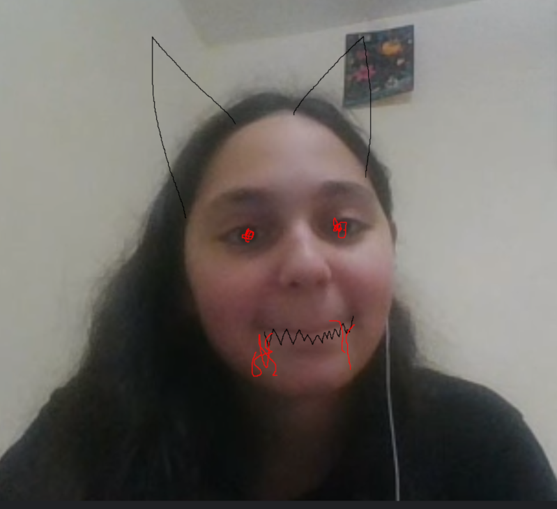

Her Appearance
Her Eyes
Her eyes are pretty reallylyyy pretty ( though she keeps denying it >:( ). They always seem to make me fall for her even more.
Her Smile
Her smile is cutest and the funniest it always makes me laugh and smile back everytime i see her smiling.
Her Hair
Her hair color is blackish/darkbrownish , soft and flowing like a waterfall. It always looks perfect, whether frizzy, unwashed, styled, or natural.
Her Style
Her style suits her alot she def got that fashion sense ( i havent seen that many pics of her but i just know she rocks all of em ).
Her Evil Cuteness
She is the most cute, gorjes, bootyful woman i've seen her cuteness makes her irresistible ( shes very evil too even though she might not look it ( source : trust me )).
